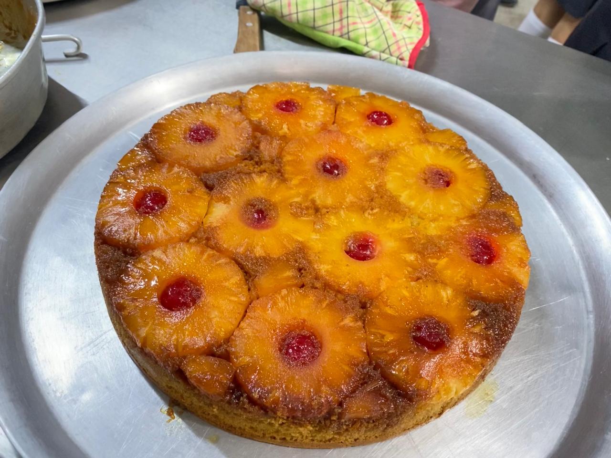

La especialidad de Alimentos brinda formación en conservación, producción y análisis de productos alimenticios. Los estudiantes adquieren conocimientos sobre higiene, técnicas de laboratorio y control de calidad, aplicando todo en prácticas reales con equipos y procesos similares a los de la industria.
